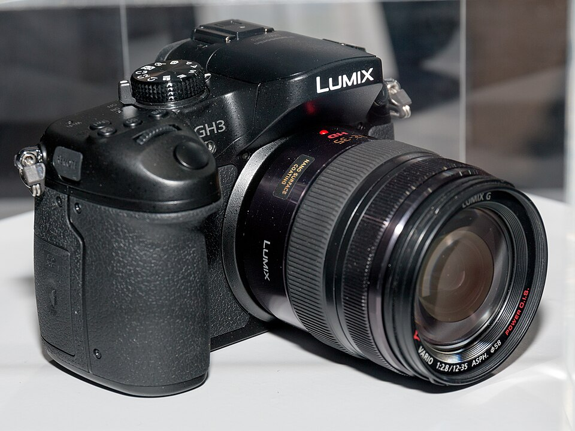

采用了1600万像素的LiveMOS感光元件，低通滤镜经过全新设计，配合Venus Engine VII FHD图像处理引擎，感光度范围ISO 200-12800，可扩展至ISO 125-25600。支持全高清1080/60p AVCHD/MP4/H.264/AVCHD Progressive格式，最高码率达到72Mbps。
堪比业务机的可靠性和稳定性，优于业务机的解像度和宽容度，重量体积和价格却不到业务机的一半
强大稳定可靠的独立散热，24小时连续作业 超采样保证扎实的成像和宽容度 FullHD60P下有50Mbps的码率 超解像无低通可选 电池续航力视频不间断3小时以上 液晶触摸屏效果很好 240FPS对焦刷新率，比单反快 便宜
没有G6上的电动变焦拨杆 AE-LOCK和AF-LOCK共用一键 没有独立的MF按钮 没有双SD卡槽 高感 线控功能太少，WIFI同样 松下没有提供堪比业务机的专业大变焦镜头，算是给业务机型留了一条路
拍摄视频的利器。拍照片也十分好。就是价格有些贵。
功能强大，拍视频首选。
取消了众所期盼的峰值对焦，也没有大家期盼的4；2；2色彩采样。电池跟GH1，GH2不通用。坑爹。价格较贵。
抢个沙发 期待一下！强悍的视频性能！
视频性能强悍！
现在有点小贵！